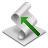

Figure 3. The dialog of the create new redirection list
Select Redirection options in the left frame. Insert name of the redirection list to create new redirection list dialog and press "Set up".

Рис.4. The dialog change Диалог изменеия списка URL
Create the new redirection list
Figure 3. The dialog of the create new redirection list
Select Redirection options in the left frame. Insert name of the redirection
list to create new redirection list dialog and press "Set up".
Рис.4. The dialog change Диалог изменеия списка URL
Adding new URL into redirection list
Select Redirection list in the left frame and insert URL into texte dit string (pic.4).
Deleting URL from redirection list
Select Redirection list in the left frame, select deleting URL on the dialog and press "Delete URL" button (pic.4).
Deleting redirection list
| Select Redirection list in the left frame and press Delete button. | 
|
Import redirection list from file
| Select Redirection list in the left frame and press "Import the list" button: |  |
Export redirection list from file
| Select Redirection list in the left frame and press "Export the list" button: |